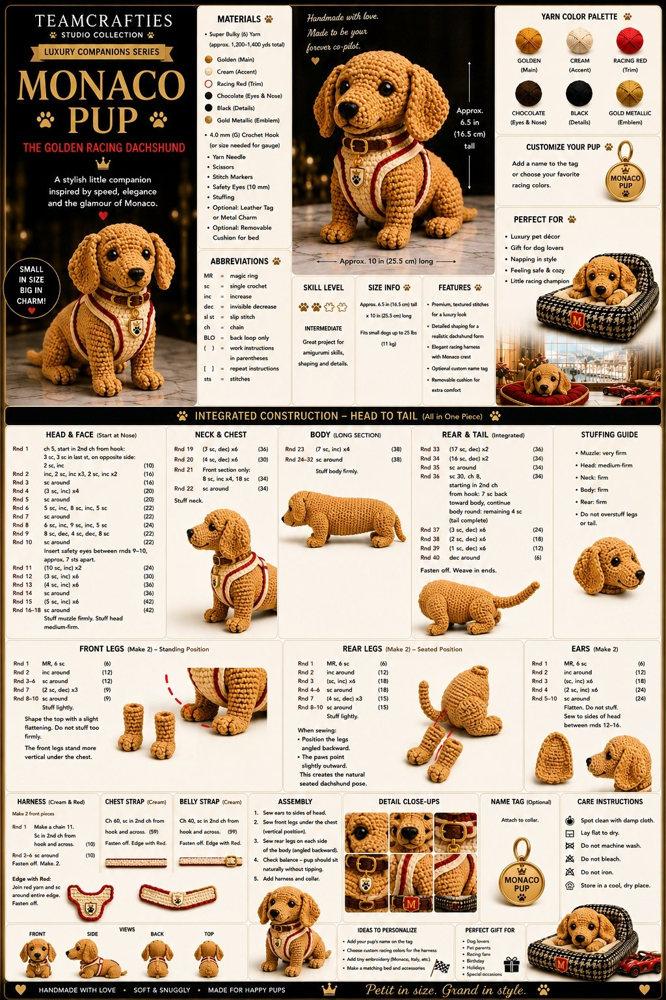

Monaco Pup
A closer Crafties-style rewrite for the golden racing dachshund. This pass follows the original poster shape more carefully: longer nose, lower body, seated back legs, front legs tucked under the chest, and the cream-and-red harness sitting higher around the shoulders.
Not linked in library yet
What we are keeping
The original dog has a long gentle dachshund body, a rounded forehead, a nose that projects forward, long floppy ears, and a chest harness that frames the shoulders instead of sitting like a belly band. This rewrite leans into those exact details.
Materials
Abbreviations
Before you start
Legs — make 4
Tail and ears
Body
Head
Snout + little harness
Assembly
Beginner help
Pattern note
This rewrite is meant to feel more like the existing Team Crafties pages: calmer, clearer, and more handmade, while also following the original dog poster more closely in silhouette and harness placement.
The stitch counts on this page were tightened into a more believable desk-tested draft. I am not claiming a physical yarn sample was completed here, just that the shaping has been brought much closer to the reference dog.
{kind=link}